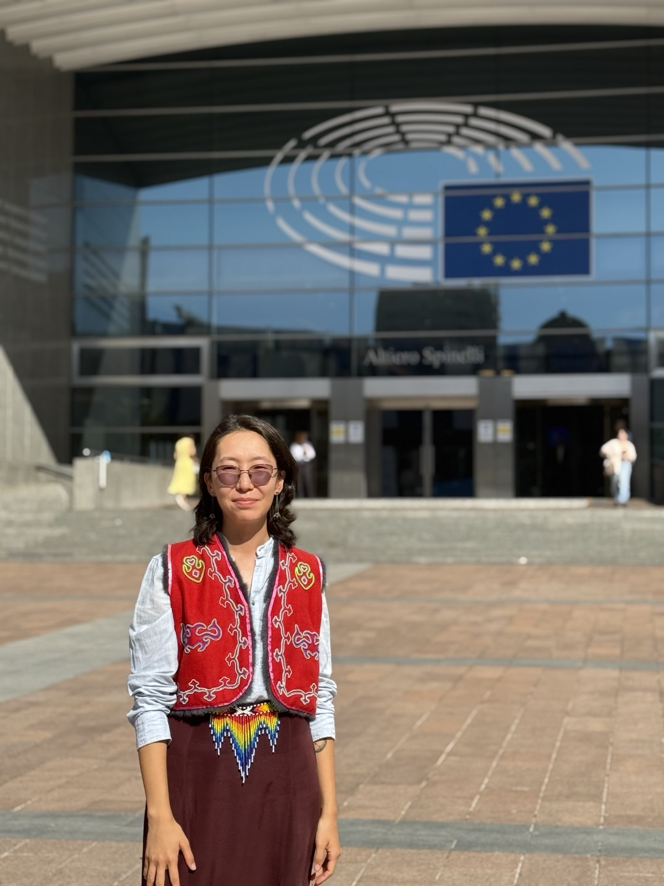
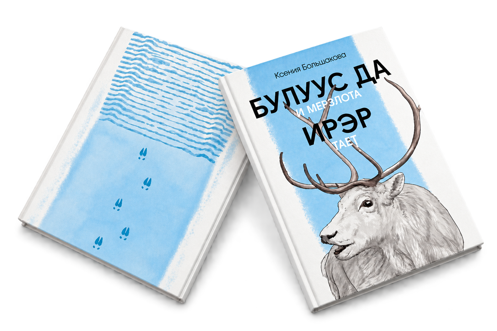
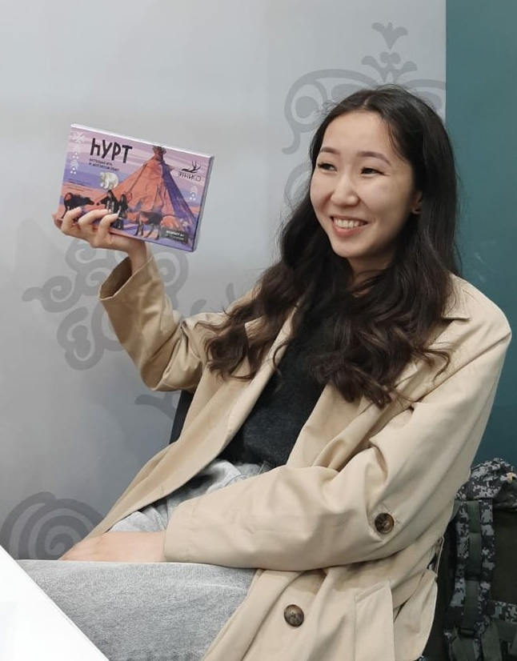
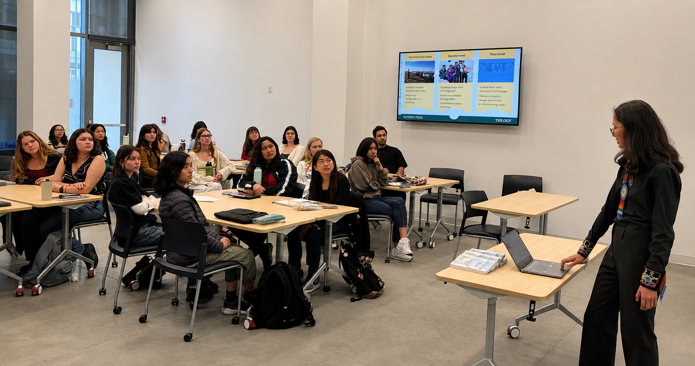
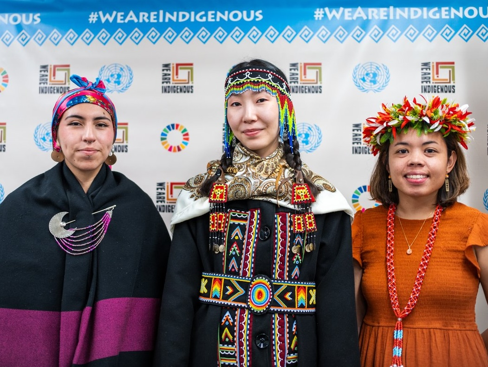

Reindeer Caravan: Indigenous Writing from Siberia
Co-edited anthology with a literary contribution, forthcoming from Amherst College Press
Indigenous advocate · Dolgan writer · Language revitalizer
Rooted in the Russian Arctic, my work brings together Indigenous advocacy, decolonial literature, environmental justice, endangered-language technology, grassroots activism, and community knowledge.

Bio
I am a Dolgan-language writer and Indigenous activist, born and raised in the Dolgan village and tundra of Popigai in the Russian Arctic. I am one of the younger keepers of my native Dolgan language, spoken by a community of roughly 800 people.
Featured book

A personal story of a child raised in a traditional reindeer-herding family explores the fate of Indigenous nomads in the Russian Arctic. Through both her child and adult voices, the author reflects on the far-reaching effects of ongoing colonization and assimilation. The novel is about what once seemed eternal but is becoming finite: permafrost, tundra, reindeer herding, and Indigenous language.
Publications
Co-edited anthology with a literary contribution, forthcoming from Amherst College Press
Published in Dolgan in the Sakha literary and socio-political magazine Cholbon
Published in Dolgan and Russian by the Indigenous-led media The Republic Speaks
Published in Brazilian Portuguese in Cultural Survival Quarterly 49(3)
Published in English, Dolgan, and Russian by Words Without Borders in Fifty States, Many Languages: Writing from the US
Published in Swedish in Det icke-ryska Ryssland : ur de dekoloniala litteraturerna , ISBN 978-91-87605-65-9
Published in Dolgan and English in the collection Arctic and Circumpolar Indigenous Futurisms
Published in English in Cultural Survival Quarterly 48(4)
Published in Dolgan and English by Khallaan Ettige in the collection of works on art, culture, and global phenomena Külük
Published in Dolgan and English by Beda Media
Published in Russian by Non-Moscow Talks
Published in Dolgan, Swedish, and English by Swedish PEN in The Non-Russian Russia: Decolonial Literatures
Published in English in Cultural Survival Quarterly 48(2)
Published in Dolgan and Russian by printing house Ofset , ISBN 978-5-6051997-6-2
Published in Dolgan and Russian by 7х7. Horizontal Russia
Published in Russian by Siberia.Realities — Radio Liberty
Indigenous languages
Language expert engaged in language documentation and Large Language Model (LLM) development
University of California, Santa Barbara, USA 2022 — presentProduct manager for a language learning mobile app Sakhalyy
Terra Indigenous-led NGO, Sakha Republic, Russia 2022 — 2024Linguistics assistant working on language data coding
Dartmouth College, USA 2023 — 2024Data curator for a Chukchi mobile dictionary app
Institute for Linguistic Studies, Russian Academy of Sciences 2023Language methodist for a strategic board game in Dolgan Nomadic Camp
Institute of Linguistics, Russian Academy of Sciences 2020 — 2021Field research with Transbaikal Evenki communities
Institute of the Peoples of the North, Russia 2020 — 2021
Invited talks & discussions


Panel discussion Kseniia Bolshakova’s "All the Frost Melts": Interdisciplinary Perspectives on Language, Culture, and Indigenous Experience in the Russian Arctic
FebruaryPanel discussion Updated Pan-Arctic Species List Incorporating Indigenous Names and Knowledge
NovemberPanel discussion Postcolonial/Decolonial Aesthetics and Politics in Multilingual Post-Soviet Contexts
NovemberCommittee meeting Revision of the Universal Declaration of Linguistic Rights
OctoberPanel discussion Ecological and Linguistic Perspectives for Community Sustainability
SeptemberPanel discussion Language Revitalisation Through Literature in Minority-Language Communities at the Literature Festival for Writers from the Arctic
SeptemberGuest Lecture Indigenous Writing on Reindeer Herders' Life in the Russian Arctic
SeptemberGuest Lecture Bringing Two Arctic Worlds Together: Translating Indigenous Dolgan Literature into Finnish
SeptemberPanel discussion Linguistic Rights and Education
AugustParticipation at the Conference Brussels Dialogue with Russian Pro-Democracy and Anti-War Actors
JulyPublic talk From Roaming the Tundra to Migrating Through Languages
JulyPublic talk Forging a New Literary Tradition
JulyPublic talk Writing in Endangered Language: In Conversation with Eternity
JulyGuest lecture Indigenous Writing as Resistance
MayPublic talk Reindeer Trails and Written Tales: A Dolgan Voice Speaks & Guest lecture Continuity and Change in Dolgan Livelihood
AprilPublic reading of excerpts from an upcoming novel on Russia's Indigenous boarding schools
AprilGuest lecture Indigenous Experience in Creative Writing
AprilGuest lecture Indigenous Literature and Language Activism
FebruaryKseniia Bolshakova on the Dolgans, Language, and Her Book
JanuaryTalk The Role of Indigenous Literature in Contemporary Art at the Assets for Artists residency
DecemberTalk Environmental Challenges and Injustice in the Russian Arctic at the workshop The Arctic Ocean and Its Futures from a Southern European Perspective
DecemberTalk Social and Environmental Consequences of Permafrost Thaw for the Dolgans of the Taimyr Peninsula at the conference Back to Frozen Earth: Permafrost in Social Theory and Beyond
JuneGuest lecture Siberian Turkic Nations: Challenges and Survival
MayGuest lecture Voices Across Borders: Language Activism in Russia and Beyond
MayGuest lecture Decolonial Theories and Writing Practices
AprilParticipation at the Indigenous Peoples Forum Points of Contact
FebruaryGuest lecture Blazing Literary Trails in an Indigenous Language
FebruaryPublic reading An Evening of Contemporary Eastern European Literatures
FebruaryExhibition of the interactive book Catching Reindeer, illustrated by Ripley Whiteside
JanuaryPublic talk Ongoing Russian Colonization
JanuaryGuest lecture Matchstick for Survival: Indigenous Writing in the Russian Arctic
DecemberExhibition of the interactive book Catching Reindeer, illustrated by Ripley Whiteside
SeptemberConversations on National Identity with Kseniia Bolshakova
AugustBook presentation of the novel All the Frost Melts & Panel discussion at the Indigenous Media Zone
AprilReport of the Regional Delegation at the United Nations Global Indigenous Youth Forum
OctoberPanel discussion Strengthening and Revitalizing Our Languages Beyond Our Homes
MayGuest lecture How to Preserve a Native Language — Practices of Dolgans
MayGuest lecture Indigenous Peoples of Siberia in Today’s Russia
AprilPanel discussion Language Revitalization Journey: Best Practices and Reflections
AprilMaster class on the Dolgan language
OctoberMaster class on Indigenous languages of Siberia
MayRecognition & support
Contact